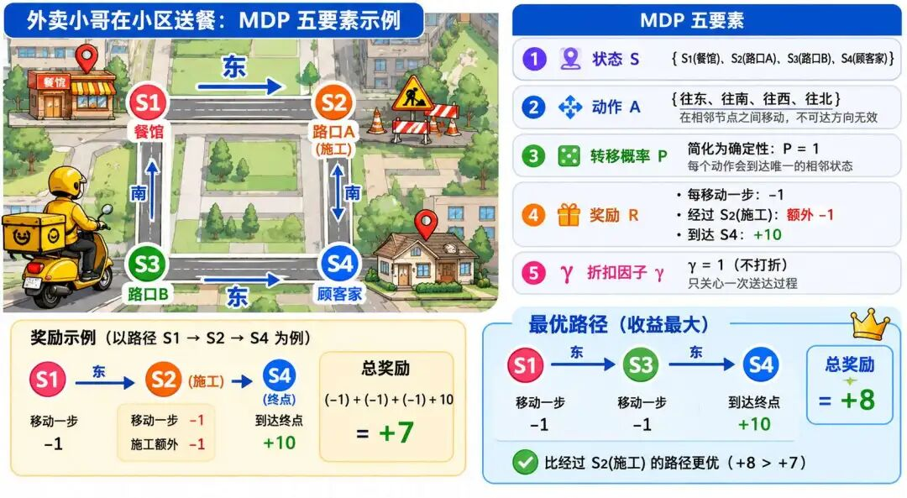

"'强人工智能'目的是'造生命'，'弱人工智能'目的是'造工具'。"--《机器学习》周志华
针对马尔可夫决策问题，上一节我们用骑手的"三招"实现利益最大化，但那种方法并不科学。
因为这种方法理论性太弱，无法持续优化，也无法量化分析，它本质上只是一种定性的经验总结，缺乏严谨的数学求解过程。
那我们应该如何寻找最优策略，找到实现外卖骑手长期奖励最大化的方法呢？动态规划给我们提供了一个核心思路。
动态规划是求解 MDP 问题的核心思想之一。它的基本思路并不复杂：把现实问题套上 MDP 五要素的"骨架"，再用"分而治之、记录子问题答案"的方式去高效求解。
我们先来回顾一下 MDP 五要素，还是结合外卖场景，可以对这五个概念有一个更加实际的感受：
| 要素 | 定义 | 外卖场景实例 |
|---|---|---|
| 状态（S） | 系统当前所有信息 | 骑手位置+电动车电量+未送订单数+订单剩余时间 |
| 动作（A） | 可执行的操作 | {接单/拒单， 走捷径/绕远路， 调整配送顺序} |
| 转移概率（P） | 执行动作后的状态转移概率 | 选择捷径：70%准时达（新状态：订单完成），30%堵车（新状态：订单延迟） |
| 奖励（R） | 动作的即时反馈 | 准时送达：+100；订单超时：-50；行驶距离：-1/公里 |
| 折扣因子（γ） | 未来奖励的折算系数（γ∈[0,1]） | γ=0.9（未来10分钟奖励折算为当前值的90%） |
我们继续以外卖小哥在小区送餐为例，假设有这样一幅地图，简化为 4 个核心位置：

我们将上述情况映射为 MDP 五要素：
骑手的任务是从餐馆 S1 出发，把外卖送到顾客家 S4，争取拿到最高的总奖励。
针对位置的进一步说明：
我们可以列出几种典型的路径，并按上面的奖励规则计算总收益：
| 路径 | 动作序列 | 步数 | 奖励计算 | 总奖励 |
|---|---|---|---|---|
| S1->S3->S4 | 南->东 | 2 | -2（移动） + 10（送达） | +8 ✅ |
| S1->S2->S4 | 东->南 | 2 | -2（移动） -1（施工） + 10（送达） | +7 |
| S1->S2->S1->S3->S4 | 东->西->南->东 | 4 | -4（移动） -1（施工） + 10（送达） | +5 |
| S1->S3->S1->S2->S4 | 南->北->东->南 | 4 | -4（移动） -1（施工） + 10（送达） | +5 |
显而易见，S1->S3->S4 是最优路径，总奖励 +8；而经过施工路段 S2 或绕路都会降低收益。
这种"枚举可能路径，选最优"的方式，本质上就是把全局问题拆解为局部子问题来递归求解。它的核心思想就是动态规划：把大问题拆成小步骤（比如"到每一路口的最优价值"），用表格记录每个小步骤的答案，避免重复计算，最后用小步骤的答案递推出大问题的答案。
为了进一步加深对"用子问题构造大问题"这一思路的理解，我们再看一个经典的小例子：青蛙跳台阶。
咱们通过一个故事来解释：一只叫小跳的青蛙要跳上台阶，目标是跳到第 n 级台阶。每次小跳只能跳 1 级或 2 级台阶（不能一次跳 3 级或更多）。问题是：有多少种不同的跳法让小跳到顶？
有些小伙伴第一次见这个题的时候，可能会有点蒙圈，不知道怎么解决。其实可以这样想：
要想跳到第 10 级台阶，要么是先跳到第 9 级，然后再跳 1 级上去；要么是先跳到第 8 级，然后一次迈 2 级上去。
同理，要想跳到第 9 级台阶，要么是先跳到第 8 级，然后再跳 1 级上去；要么是先跳到第 7 级，然后一次迈 2 级上去。
要想跳到第 8 级台阶，要么是先跳到第 7 级，然后再跳 1 级上去；要么是先跳到第 6 级，然后一次迈 2 级上去。
假设跳到第 n 级台阶的跳数定义为 f(n)，很显然就可以得出以下公式：
f(10) = f(9) + f(8)
f(9) = f(8) + f(7)
f(8) = f(7) + f(6)
...
f(3) = f(2) + f(1)即通用公式为：$f(n) = f(n-1) + f(n-2)$
那 f(2) 或 f(1) 等于多少呢？
当只有 2 级台阶时，有两种跳法：第一种是直接跳两级，第二种是先跳一级再跳一级，即 f(2) = 2。
当只有 1 级台阶时，只有一种跳法，即 f(1) = 1。
有了 f(2) 和 f(1)，根据公式 f(n) = f(n-1) + f(n-2)，就能计算 f(3)，有了 f(3) 和 f(2) 就能计算 f(4)，以此类推，直到计算出 f(10)。
动态规划听起来高深，但核心就是"避免重复计算，记住结果"。
刚才的小区送餐场景只有 4 个位置、4 种动作，我们靠手算就能枚举完所有路径找到最优解。但现实中的问题规模会迅速放大。
假设有 100 个送达地点，如果走"列出所有访问顺序、再选最优"的暴力路线，排列数高达 100! ≈ 9.3 × 10^157，远超宇宙原子数（约 10^80）。即使每秒计算 1 亿条，也需要约 10^141 年，完全不可行。
除了地点的复杂性，还有大量随机性因素：交通拥堵、订单新增、天气变化……这些都让"提前列出所有路径再选最优"的暴力做法彻底失灵。
我们需要的是一种更优雅的数学表达，既能严格刻画"子问题最优 -> 整体最优"这一思想，又能高效处理大规模和随机性问题。这就是贝尔曼方程登场的舞台。
把"子问题最优 -> 整体最优"这一直觉严格数学化，这件事在 1957 年由理查德·贝尔曼完成。他给出的"最优性原理"是整个框架的基石：
"最优路径的子路径，必然也是最优的。"
这个观点很好理解，可以反证：如果最优路径中有某个子路径不是最优，那么把这个子路径替换为更优的，就能得到更优的整体路径，这与"原路径是最优"矛盾。
因此问题就可以转化为：在做每一个决策时，只要保证在当前状态下，执行的动作能让长期奖励最大化，那么最终就能完成目标。
注意，为什么这里要强调长期奖励最大化，而不是每个动作都拿到最大即时奖励呢？因为智能体（和人类）在任务驱动时都倾向于追求"即时奖励"的快感，这就会出现"短视"问题。
比如自动驾驶中，一次避障的即时奖励很小，但却可能避免未来车祸（长期收益巨大）。
人物小传：
- 生平：贝尔曼 1920 年生于纽约布鲁克林，1946 年获普林斯顿大学数学博士学位，师从所罗门·莱夫谢茨（Solomon Lefschetz）。
- 职业阶段：1949 年开始与兰德公司（RAND Corporation）合作，1953 年正式加入，专注于军事和航空航天领域的优化问题（如导弹轨迹规划、资源调度），这成为他提出动态规划的实践土壤。
- 代表作：1957 年出版《动态规划》（Dynamic Programming），系统阐述了动态规划理论和以他命名的贝尔曼方程，后者成为整个最优控制和强化学习的数学基石。
那要如何避免这种短视行为呢？最好的办法就是对未来的收益进行"折现"。
执行每一步动作之前都要权衡利弊，有的动作执行后，当下能拿到最大奖励，但却可能损失长期奖励。
所以我们就用某种方式，将未来奖励进行折现，让"现在的奖励"和"未来的奖励"能放在同一个度量上比较，从而衡量当下的决策是否真的有利于长期奖励最大化。
折扣因子就是用来衡量"未来奖励折现力度"的参数。想象你面临两个选择：选项 A 是今天立刻拿到 100 元；选项 B 是一年后拿到 110 元。
那你应该选哪个呢？这取决于折扣因子。折扣因子 γ 的大小会影响你的最终判断：
γ 越小，未来越"不值钱"，决策越短视；
γ 越大，未来越"值钱"，决策越长远。
因此可以说，强化学习的本质就是通过持续计算"当下收益 + 未来机会的折现"，让智能体在动态环境中做出全局最优决策，从而实现长期奖励最大化。
而贝尔曼方程就是描述"持续计算当下收益 + 未来机会折现"的最佳数学语言。为了便于理解，我没有直接给出符号公式，而是先用中文公式表达：
长期价值 = 即时奖励 + 未来所有状态的折现价值的加权和
或者更具体地说：
"一个状态（或状态-动作组合）的长期价值，等于当前能获得的即时奖励，加上未来所有可能状态的折现价值按概率加权后的总和。"
"此刻的价值，是你马上能赚到的，加上未来能赚到的打折价。而未来的价值，又是下一时刻的'马上能赚的 + 更未来的打折价'，如此递归，直到终点。"
这一思想不仅适用于算法（如 AlphaGo 的自我对弈优化），也可用于现实决策：当前牺牲若换来更大的未来收益，整体仍是赢家。
在给定策略 π 下，贝尔曼方程有两种价值评估视角：状态价值（V 函数）和动作价值（Q 函数）。
第一种是状态价值视角，通过策略加权动作，回答 "当前策略下，这个状态多好？"
状态价值函数 = "从状态 s 出发的长期回报期望，等于所有可能动作的执行概率乘以（该动作带来的即时奖励 + 折扣因子 × 下一状态的价值期望）的总和。"
$$ \underbrace{V^\pi(s)}_{\text{策略}\pi\text{下状态}s\text{的状态价值}} = \underbrace{\sum_{a}}_{\substack{\text{对所有可选动作}a \\ \text{求和}}} \underbrace{\pi(a \mid s)}_{\text{策略}\pi\text{下状态}s\text{选动作}a\text{的概率}} \left[ \underbrace{r(s,a)}_{\text{状态}s\text{执行动作}a\text{的即时奖励}} + \underbrace{\gamma}_{\text{折扣因子}} \underbrace{\sum_{s'}}_{\substack{\text{对所有后续状态}s' \\ \text{求和}}} \underbrace{p(s' \mid s,a)}_{\text{状态}s\text{执行动作}a\text{转移到}s'\text{的概率}} \underbrace{V^\pi(s')}_{\text{策略}\pi\text{下后续状态}s'\text{的状态价值}} \right] $$第二种形式是动作价值视角，通过固定动作，回答 "在这个状态下，做这个动作多好？"
动作价值函数 = "在状态 s 执行动作 a 的长期回报期望，等于动作 a 带来的即时奖励，加上折扣因子 × 所有可能下一状态 s' 的出现概率乘以 s' 的状态价值的加权总和。"
$$ \underbrace{Q^\pi(s,a)}_{\text{策略}\pi\text{下状态}s\text{执行动作}a\text{的动作价值}} = \underbrace{r(s,a)}_{\text{状态}s\text{执行动作}a\text{的即时奖励}} + \underbrace{\gamma}_{\text{折扣因子}} \underbrace{\sum_{s'}}_{\substack{\text{对所有后续状态}s' \\ \text{求和}}} \underbrace{p(s' \mid s,a)}_{\text{状态}s\text{执行动作}a\text{转移到}s'\text{的概率}} \underbrace{V^\pi(s')}_{\text{策略}\pi\text{下后续状态}s'\text{的状态价值}} $$那为何需要两种视角来评判呢？我们以炒股为例来解释：
状态价值函数（简称 V 函数）用于衡量在固定策略 π 下某个状态的综合价值，适用于判断策略的整体效果，比如"采用保守策略时，股市下跌状态的价值较低"。它的计算需考虑策略的概率分布，因此方程中包含策略概率加权项 π(a|s)。
而动作价值函数（简称 Q 函数）则直接量化执行特定动作的收益，是策略改进的核心，比如"在股市下跌时，抄底动作的长期收益高于割肉"。因其固定了动作 a，方程中无需策略概率加权，仅依赖环境的状态转移概率 P(s'|s,a)。
这两种价值函数不是没有关联的，它们可以互相转化：
1、从 Q 到 V：状态价值 V(s) 是其所有可能动作 Q 值的加权平均（权重为策略概率），即：
"状态 s 的价值 = ∑ 策略选择动作 a 的概率 × 动作 a 的价值"
例如：自动驾驶中，"路口"状态的价值 = 直行概率×直行价值 + 左转概率×左转价值。
2、从 V 到 Q：动作价值 Q(s,a) 的后续价值需通过下一状态 s' 的 V 函数计算，即：
"动作 a 的价值 = 即时奖励 + γ × 下一状态 s' 的价值期望"
例如：执行"左转"后，下一状态可能是"畅通道路"（高价值）或"拥堵路段"（低价值），需按转移概率加权平均。
两种形式的区别：
| 维度 | 状态价值 V(s) | 动作价值 Q(s,a) |
|---|---|---|
| 核心目标 | 评估状态s的长期收益期望 | 评估动作a在状态s的长期收益期望 |
| 决策依赖 | 依赖策略π（需加权所有动作） | 动作a已固定，无需策略加权 |
| 计算关系 | $V(s) = ∑[π(a|s) × Q(s,a)]$ | $Q(s,a) = R(s,a) + γ×E[V(s')]$ |
| 典型应用 | 策略评估（如策略迭代） | 策略改进（如Q-learning） |
前面讲的 V 函数和 Q 函数，都是在给定策略 π 的前提下评估每个状态/动作的价值。但我们真正想要的是找到最优策略:在每一步都选择那个让长期价值最大的动作。把"按策略加权所有动作"换成"取最优动作（max）"，就得到了贝尔曼最优方程。
1、最优状态价值 $V^*(s)$：
状态 s 的最优价值，是所有可选动作中，能使【即时奖励 + γ × 下一状态最优价值】最大化的那个动作对应的值。
即：智能体在 s 处选择"当下收益 + 未来最优路径折现"综合最高的动作。
$$ \underbrace{V^*(s)}_{\text{状态}s\text{的最优状态价值}} = \underbrace{\max_{a \in \mathcal{A}}}_{\substack{\text{对动作空间}\mathcal{A} \\ \text{的动作}a\text{取最大}}} \left[ \underbrace{r(s,a)}_{\text{即时奖励}} + \underbrace{\gamma}_{\text{折扣因子}} \underbrace{\sum_{s'}}_{\text{对后续状态}s'求和} \underbrace{P(s' \mid s,a)}_{\text{状态转移概率}} \underbrace{V^*(s')}_{\text{后续状态}s'\text{最优价值}} \right] $$2、最优动作价值 $Q^*(s,a)$：
执行动作 a 后，系统转移到新状态 s'，此时智能体会选择 s' 下最优的动作 a' 来最大化长期收益。因此，$Q^*(s,a)$ 等于即时奖励 + γ × s' 下所有动作中最大 $Q^*(s',a')$ 的期望。
即：当前动作的价值取决于当前奖励与后续最优动作的连锁价值。
$$ \underbrace{Q^*(s,a)}_{\text{最优动作价值}} = \underbrace{r(s,a)}_{\text{即时奖励}} + \underbrace{\gamma}_{\text{折扣因子}} \underbrace{\sum_{s'}}_{\text{对后续状态}s'求和} \underbrace{P(s' \mid s,a)}_{\text{状态转移概率}} \underbrace{\max_{a' \in \mathcal{A}} Q^*(s',a')}_{\text{对下一动作}a'取最大Q*} $$正是基于贝尔曼最优方程，后续才发展出值迭代、策略迭代、Q-learning 等高效求解算法，这些会在后续章节展开。
最后我们再来总结一下，MDP 五要素在贝尔曼方程中的作用：
| MDP要素 | 符号 | 在贝尔曼方程中的角色 | 实际案例（外卖骑手） |
|---|---|---|---|
| 状态 (S) | s, s' | 价值函数V/Q的输入，描述决策背景 | 骑手位置：商圈A（高价值）、偏远小区（低价值） |
| 动作 (A) | a | 动作价值函数Q的输入，策略π的选择对象 | 动作选择：走捷径（高风险）、绕路（高可靠） |
| 转移概率 (P) | P(s'|s,a) | 未来状态s'的权重，量化环境随机性 | 走捷径：P(准时|商圈A,捷径)=0.7 |
| 奖励函数 (R) | R(s,a,s') | 即时收益，驱动短期决策 | 准时奖励R=+100，超时惩罚R=-50 |
| 折扣因子 (γ) | γ | 未来价值折现率，平衡长短期收益 | γ=0.9（未来10分钟奖励打9折） |
贝尔曼方程其实是把一个朴素的生活直觉：做事既要顾眼前、也要顾长远，然后变成一台能反复运转的"计算机器"。无论是外卖骑手琢磨走哪条路，还是 AlphaGo 在棋盘上落子，背后都是同一个递归式在默默工作：当前这一步的价值，等于眼前的即时奖励，加上未来最优选择的折现。正是这个看似简单的式子，撑起了整个强化学习的大厦。
当然，写出方程只是第一步。真正的难题在于：面对成千上万个状态，我们到底该怎么把每个状态的价值一个个"算"出来呢？这就要靠基于贝尔曼方程发展出来的求解算法了。下一节，我们就来认识其中最经典的两位"主角"：值迭代与策略迭代，看看机器是如何在一轮轮的试错与更新中，慢慢逼近那个最优策略的。
动态规划（Dynamic Programming） ：一种"分而治之"的求解思想:把大问题拆解为相互重叠的子问题,先求解并记录子问题的答案,再自底向上递推出原问题的解,从而避免重复计算。它由理查德·贝尔曼于 1957 年系统提出,是求解马尔可夫决策过程的核心方法,也是贝尔曼方程的理论根基。
贝尔曼最优性原理（Principle of Optimality） ：贝尔曼提出的核心命题:一条最优路径上的任意一段子路径,本身也必然是该子问题的最优解。正是这一性质,使得全局最优问题可以被拆解为一系列局部最优的递归子问题,为贝尔曼方程的成立提供了逻辑前提。
贝尔曼方程（Bellman Equation） ：描述价值函数自身递归关系的方程,核心可概括为"长期价值 = 即时奖励 + 未来价值的折现"。它把一个状态的价值与其后继状态的价值联系起来,将"如何衡量长期收益"这一抽象问题转化为可迭代求解的数学形式,是整个强化学习的数学基石。
状态价值函数（State-Value Function, V） ：记作 V^π(s),表示在策略 π 下、从状态 s 出发所能获得的长期累积折扣奖励的期望。它回答的是"在当前策略下,这个状态有多好",计算时需对该状态下所有可能动作按策略概率加权,适用于评估一个策略的整体优劣。
动作价值函数（Action-Value Function, Q）：记作 Q^π(s, a),表示在状态 s 下执行特定动作 a、其后仍遵循策略 π 所能获得的长期回报期望。它回答的是"在这个状态下,做这个动作有多好";由于动作已被固定,无需对策略加权,是策略改进与 Q-learning 等算法的核心。
贝尔曼最优方程（Bellman Optimality Equation） ：贝尔曼方程的"取最优"版本:将期望方程中"按策略加权所有动作"替换为"取价值最大的动作（max）",直接刻画最优价值函数 V* 与 Q*。它描述了最优策略下价值的递归关系,是值迭代、策略迭代等求解最优策略算法的出发点。